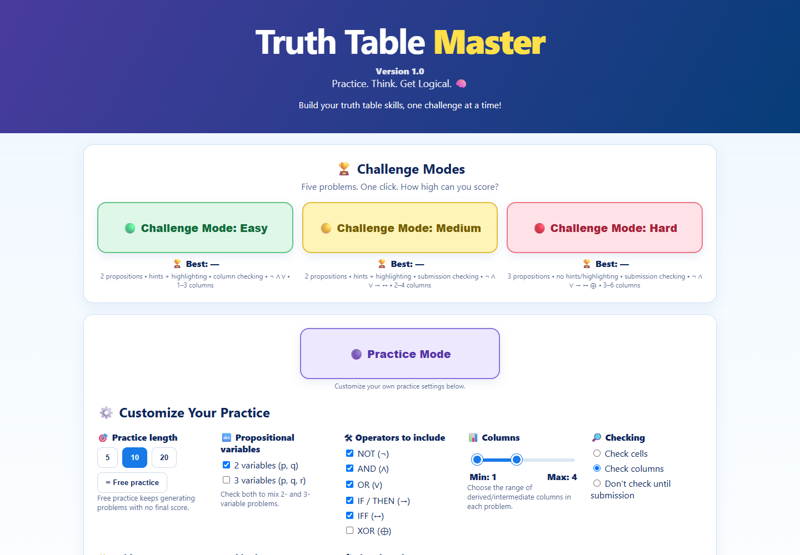
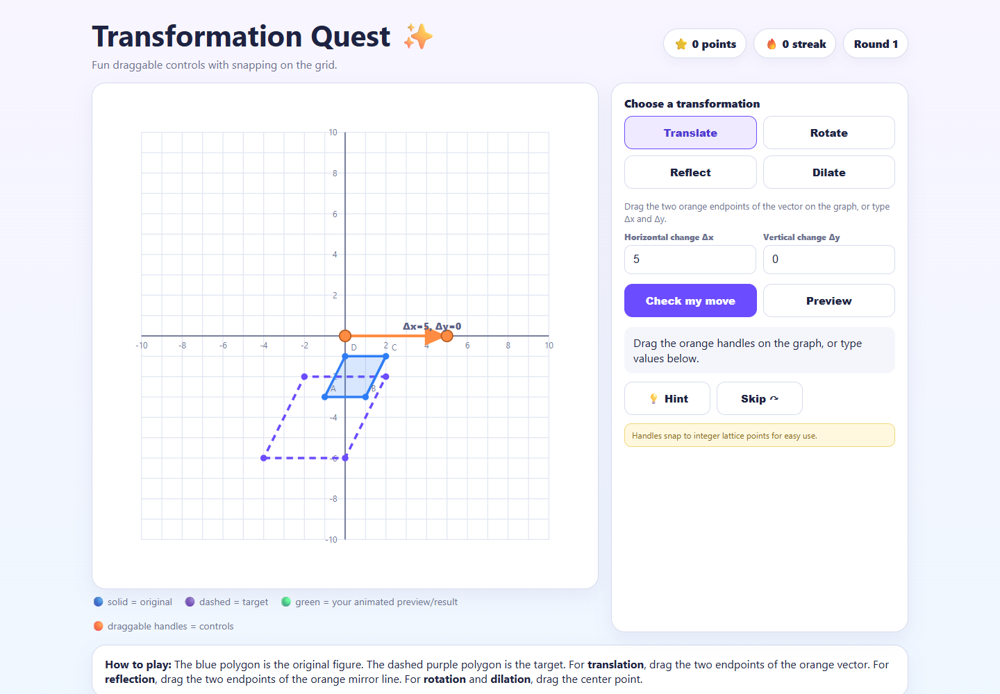
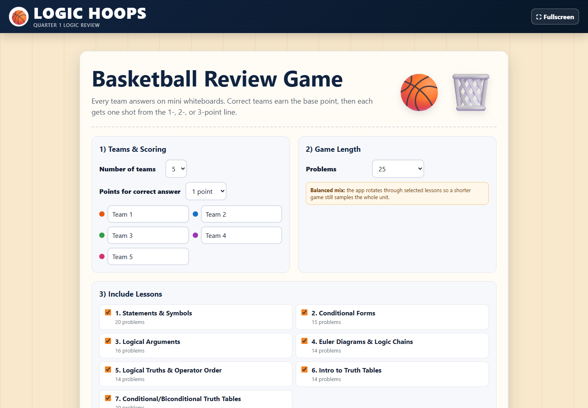
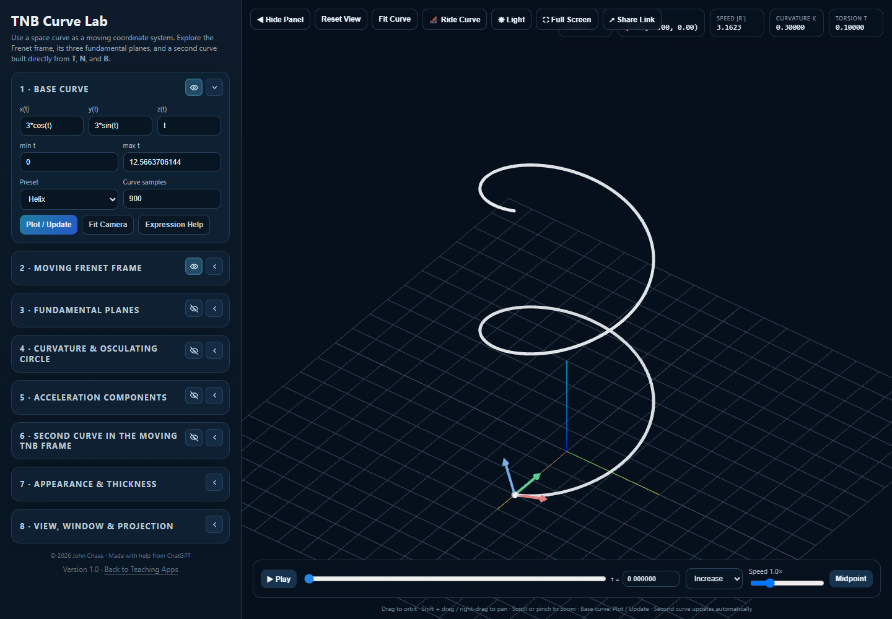
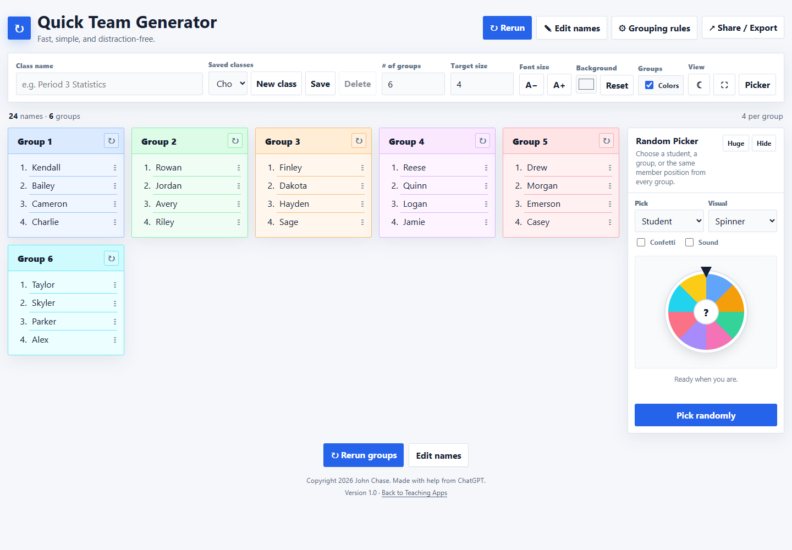
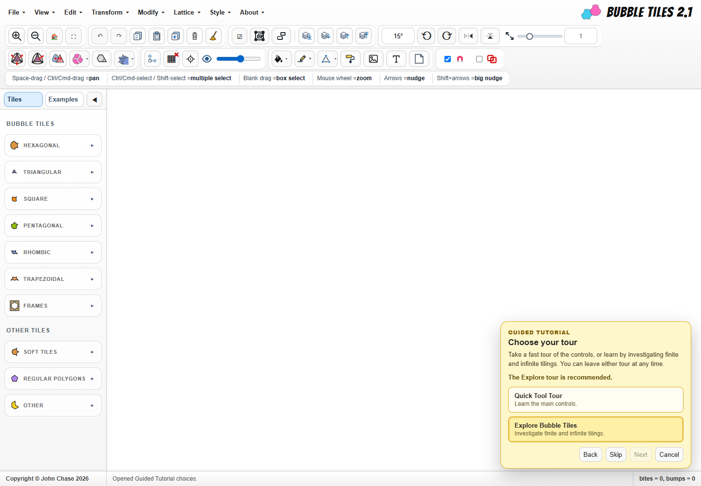

Explore · Practice · Play
Mr. Chase's Math Teaching Apps
Interactive tools and activities for mathematics students.

Truth Table MasterPractice logic, one truth at a time.
Transformation QuestExplore how shapes move and change.
Logic HoopsBring basketball to logic review.
Curve LabExplore space curves and moving frames.
Class Team GeneratorTurn your class roster into teams.
Bubble TilesBuild colorful tilings and explore geometry.bubbletiles.com ↗About the apps
A collection of teaching tools by John Chase, made for exploring mathematics, practicing ideas, and bringing a little play into the classroom. Use them for individual practice, whole-class activities, or organizing your next group challenge.
Choose an app above to get started, and share this page with students and fellow teachers.
About Mr. Chase
John Chase is a mathematics teacher and math resource teacher at Walter Johnson High School in Bethesda, Maryland. He has been teaching since 2006 and enjoys sharing the fun and creativity of mathematics with students and fellow teachers.
Outside the classroom, his interests include juggling, magic, board games, photography, and LEGO.